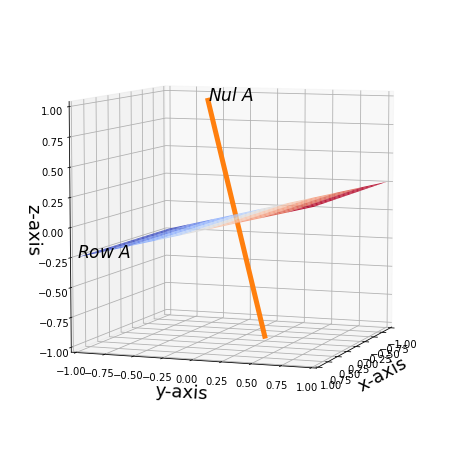

Orthogonal Subspace
Orthogonal Subspaces
Definition (Orthogonal Subspaces)
Note that is does not make sense to talk about the Orthogonality of one subspace.
Given any two vector subspaces \(\V\) and \(\W\), both necessarily have the same dimension in the sense that any elements in either subspace should have the same length, if not the dot (inner) product is not well defined, then we say that \(\V\) and \(\W\) are orthogonal subspaces if \(\v^\top \w = \0\) for all \(\v \in \V\) and \(\w \in \W\).
Example (Orthogonal Subspaces)
The Nullspace and the Row Space are orthogonal subspaces.
We will soon prove this.
Theorem (Dimension implies Non-Orthogonality)
This may be best explained using an example so that it sticks to memory intuitively.
Consider \(\R^3\) space and take 2 subspaces \(\V, \W \subseteq \R^3\) where both are 2D-planes (spanned by 2 linearly independent vectors) embedded in the \(\R^3\) space. Then \(\V\) and \(\W\) can never be orthogonal to each other. The intuition is that no matter how you position 2 such 2D-planes, they can never be placed completely orthogonal to each other.
This idea leads us to define another core concept, Orthogonal Complement. Once defined, you will then be able to prove why this is so.
Definition (Orthogonal Subset)
Let \(\Q \subseteq \V\) be a subset in a subspace, then \(\Q\) is an orthogonal subset of \(\V\) if every element in \(\Q\) is mutually orthogonal to each other, that is, \(\forall \q_i, \q_j \in \Q\), we have \(\q_i \perp \q_j\).
Theorem (Orthogonal Subset is Linearly Independent)
Let \(\V\) be an inner product space, then any orthogonal subset of \(\V\) consisting of non-zero vectors is linearly independent.
Proof (Orthogonal Subset is Linearly Independent)1
Intuitively, this must be true, just image the standard basis in \(\R^3\) space, we can easily verify they are an orthogonal subset, and also have the intuition that these 3 vectors must be linearly independent.
Orthogonal Complements
Definition (Orthogonal Complements)
Let \(\V \in \F^{D}\) be a \(D\)-dimensional subspace and let \(\U \subset \V\) be a \(M\)-dimensional subspace. Denote the set of vectors \(\{\w_i\}\) to be all vectors that are orthogonal to \(\U\), then this set of vectors, denoted \(\U^\perp\), is the orthogonal complement to \(\U\) and is defined as:
Theorem (Properties of Orthogonal Complements)
Let \(\U\) be a subset of a finite-dimensional inner product space \(\V\), then we have:
Theorem (Intersection of Orthogonal Complements is Zero)
The proof is relatively simple, consider a contradiction that there is some element \(\u\) in the intersection of \(\U \cap \U^\perp\) that is not \(\0\), then \(\u \in \U\) and \(\u \in \U^\perp\), by the definition of Orthogonal Complement, we must have \(\u \cdot \u = \0\), which is a contradiction since no such \(\u\) can fulfill this.
Theorem (Orthogonal Complement is a Subspace)
If \(\U\) is a non-empty subset of a finite-dimensional inner product space \(\V\), then \(\U^\perp\) is a subspace.
Theorem (Element of Orthogonal Complement is Orthogonal to every Linear Combination of U)
\(\U^\perp = (\span(\U))^\perp\) which means a vector \(\u\) belonging to the orthogonal complement of \(\U\) if and only if \(\u\) is orthogonal to every linear combination of vectors from \(\U\).
Theorem (Othogonal Complement's Complement is Itself)
Theorem (The Fundamental Theorem of Linear Algebra Part 2: Orthogonal Complements and The Four Fundamental Subspaces)
We state straightaway that the row space and the kernel (right nullspace) are orthogonal complements, with some preliminary intuition below.
More specifically, one should note that the row space of a matrix A is not only orthogonal to its nullspace, it also serves as a complement to it such that the union of them is the whole R^n space itself. I will now denote nullspace as N(A) and row space as R(A), with the associated matrix being m by n.
Before the concept of orthogonality, one may take a while to realize that R(A) UNION N(A) = R^n. Even though the rank-nullity theorem tells us that their dimension of the nullspace and row space is n, it did not specifically say that the union of them is the whole Rn space (though intuitively they are if you stare at it long enough). But the main point is, with the orthogonal concept introduced, every vector in the nullspace is "perpendicular" to those in the row space, and that means that any vector n in N(A) is of a "different axis/dimension" as those in R(A), and this indicates linear independence of them. Now this means the basis vectors of N(A) and R(A) are linearly independent, and hence when unioned, they make up the whole R^n space.
Row space and Null Space are Orthogonal Complements
The row space and the null space of a matrix \(\A \in \F^{m \times n}\) are orthogonal complements.
Proof (Orthogonal Subspace)
We first show that both subspaces are orthogonal.
Note that the null space of a matrix \(\A \in F^{m \times n}\) is the set of all vectors \(\x\) such that \(\A\x = \0\). We can also write \(\A\x = \0\) as
where \(\cdot\) is the dot product and \(\r_i\) the row vector \(i\) of \(\A\).
Then one can easily see that \(\A\x = \0\) if and only if every \(\r_i \cdot \x = 0\). Then it immediately follows that every \(\r_i\) is orthogonal to \(\x\), and consequently, the nullspace and row space of \(\A\) forms an orthogonal subspace. To see this, take any vector \(\r \in R(\A)\), and represent this \(\r = \lambda_1 \r_1 + ... + \lambda_m \r_m\), then
So we have proved that if we take any element \(\r\) in the row space of \(\A\), then \(\r\x = \0\) for every \(\x \in N(\A)\). Since the dot product \(\cdot\) is commutative, we do not need to show that for every element \(\x \in N(\A)\), it is orthogonal to every element in the row space of \(\A\).
Proof (Orthogonal Complements)2
We have proven that the row space \(\newcommand{\R}{\mathrm{R}} \R(A)\) and null space \(\newcommand{\N}{\mathrm{N}} \N(A)\) are orthogonal to each other; that is, \(\newcommand{\r}{\vec r} \newcommand{\n}{\vec n} \forall\r\in\R(A)\ \forall\n\in\N(A): \r\perp\n\).
Next, we show that they are complements of each other:
Both of these criteria must be met for two subspaces to be orthogonal complements.
Proof: Suppose we take an element \(\v \in \mathrm{R}(\A) \cap \N(A)\), this means that \(\newcommand{\v}{\vec v} \v\in\N(A)\) and \(\v\in\R(A)\). Recall that if \(\n\in\N(A)\) then \(\(\n\cdot\r=0\)\) where \(\r\in\R(A)\).
Now the element we took from their intersection \(\v\) has this property:
We can use two ways from here, one is we know
and thus for this to be zero, then \(v_i^2 = 0 \implies v_i = 0 \forall i\), hence \(\v\) is the zero vector.
Otherwise, since \(\left\|\v\right\|=0\), the vector \(\v\) must be the zero vector.
In any case, any vector \(\v\) in both \(\R(A)\) and \(\N(A)\) must equal \(\vec0\). Therefore \(\R(A)\cap\N(A)=\left\{\vec0\right\}\), and so by definition \(\R(A)\) and \(\N(A)\) are complementary subspaces as well as orthogonal. \(\blacksquare\)
Column space and Left Null Space are Orthogonal Complements
This proof is similar with the previous one.
Important Note
Note that at this junction, we have to remind ourselves that given two subspaces \(\U\) and \(\U^\perp\) in a vector space \(\V \in \F^n\), we can only tell that their intersection is zero, meaning they are disjoin, but we are not sure whether the union of them actually spans the whole \(\V\) or not. Intuitively, it should, but we should soon see why in proof. Note the intuition is given earlier in The Fundamental Theorem of Linear Algebra Part 2.
Theorem (Subspace and its Orthogonal Complement Forms a Disjoint Union)
Let \(\V \in \F^n\) be of \(n\) dimensions. Let \(\U\) be a subspace of \(\V\) and \(\U^\perp\) be the Orthogonal Complement of \(\U\), then we have
In other words, the basis of \(\U\) and \(\U^\perp\) span \(\V\).
We do not use a formal proof here, instead we reason out with some geometric intuition. We should use the example of the row space and the kernel with symbols \(R(\A)\) and \(N(\A)\) respectively.
- First, the Rank-Nullity Theorem tells us that the dimensions of \(R(\A)\) and \(N(\A)\) is \(n\). This helps because if they do not add up to \(n\), then their basis certainly do not span \(\V\).
- Then, since Orthogonality implies that every vector is pairwise orthogonal, it means that geomtrically, both subspaces' basis vectors are all independent. You can think perpendicular means that the basis vectors all point in different axis. Thus, both subspace have pairwise linearly independent vectors.
- Finally, since the basis vectors of \(R(\A)\) and \(N(\A)\) when unioned together, are linearly independent, and the cardinality is \(n\), it follows that this basis spans \(\V\). \(\blacksquare\)
Theorem (The Orthogonal Decomposition Theorem)3
Let \(\U\) be a subspace of a finite-dimensional inner product space \(\V\), then any vector \(\v \in \V\) can be written uniquely in the form \(\v = \u_1 + \u_2\) where \(\u_1 \in \U\) and \(\u_2 \in \U^\perp\). In direct sum, we have:
Corollary (Dimensions of Orthogonal Complements)3
If \(\U\) is a subsapce of an \(n\)-dimensional inner product space \(\V\), then \(\dim(\U) + \dim(\U^\perp) = n\).
Proof (Dimensions of Orthogonal Complements)3
Corollary (Dimensions of Four Fundamental Subspaces Revisited)4
Theorem (Unique Row Space Solution to \(\mathbf{Ax=b}\))
Given any \(\b \in C(\A)\), there exists an unique member \(\r_0 \in R(\A)\) such that \(\r_0\) is a solution to \(\A\x=\b\), and this \(\r_0\) is the solution (special) and no other solution can have a smaller length in the sense that \(||\x|| \geq ||\r_0||\) for any solution \(\x\).
Visualization (Row Space and Null Space Orthogonal)
The plots and contents below are entirely credited to MacroAnalyst's GitHub Repo5.
import matplotlib.pyplot as plt
import numpy as np
from mpl_toolkits.mplot3d import Axes3D
import sympy as sy
sy.init_printing()
A = sy.Matrix([[5, 8, 2], [10, 16, 4], [3, 4, 1]]);A
\(\displaystyle \left[\begin{matrix}5 & 8 & 2\\10 & 16 & 4\\3 & 4 & 1\end{matrix}\right]\)
A.rref()
\(\displaystyle \left( \left[\begin{matrix}1 & 0 & 0\\0 & 1 & \frac{1}{4}\\0 & 0 & 0\end{matrix}\right], \ \left( 0, \ 1\right)\right)\)
The basis of row space of \(A\) is \((1, 0, 0)\) and \((0, 1, .25)\).And the \(\text{Row}A\) is
The \(\text{Nul}A\) is $$ \left[ \begin{matrix} x_1 \ x_2\ x_3 \end{matrix} \right]= x_3 \left[ \begin{matrix} 0 \ -.25\ 1 \end{matrix} \right] $$
Now we can visualize their relations geometrically. Again keep in mind that Matplotlib does not render 3D properly, so you need some imagination as well.
Here is what we observe.
The \(\text{Row}A\) is a plane and \(\text{Nul}A\) is a line which is perpendicular to the plane. It is easy to grasp the idea if you notice that in a homogeneous system \(Ab = \mathbf{0}\), it breaks down into many dot products
where \(A_{1i}, A_{2i}, A_{3i}\) are the rows of \(A\). In later chapters we will prove when the dot product of two vectors equals zero, which means geometrically they are perpendicular.
%matplotlib inline
s = np.linspace(-1, 1, 10)
t = np.linspace(-1, 1, 10)
S, T = np.meshgrid(s, t)
X = S
Y = T
Z = T*.25
fig = plt.figure(figsize = (8,8))
ax = fig.add_subplot(111,projection='3d')
ax.plot_surface(X, Y, Z, alpha = .9, cmap=plt.cm.coolwarm)
x3 = np.linspace(-1, 1, 10)
x1 = 0*x3
x2 = -.25*x3
ax.plot(x1,x2,x3, lw = 5)
ax.set_xlabel('x-axis', size = 18)
ax.set_ylabel('y-axis', size = 18)
ax.set_zlabel('z-axis', size = 18)
ax.axis([-1,1,-1,1])
ax.text(x = 1, y = -1, z = -.25, s = r'$Row\ A$', size = 17)
ax.text(0, -.25, 1, s = r'$Nul\ A$', size = 17)
ax.view_init(7, 20)
plt.show()

-
Orthogonal Subset is Linearly Independent: Henry Ricardo: A Modern Introduction to Linear Algebra, 2009. (pp. 477) ↩
-
Row space and Null space are Orthogonal Complements: How would one prove that the row space and null space are orthogonal compliments of each other? ↩
-
Proof (Dimensions of Orthogonal Complements): Henry Ricardo: A Modern Introduction to Linear Algebra, 2009. (pp. 524) ↩↩↩
-
(Dimensions of Four Fundamental Subspaces Revisited): Henry Ricardo: A Modern Introduction to Linear Algebra, 2009. (pp. 525) ↩
-
Row Space and Null Space Orthogonal: Row Space and Null Space Orthogonal ↩